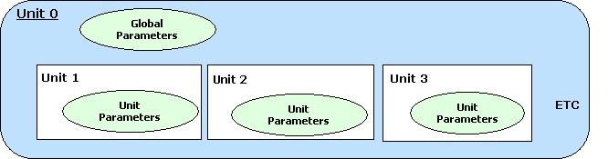

A unit is a logical section of the Plug-in. For example an EQ section can be a unit.
The purposes of units are:
- Reveal the internal logical structure of the Plug-in
- Organize parameters by associating them with units
- Support Program Lists
- Support handling of Complex Plug-in Structures / Multi-timbral Instruments
- Multiple program lists (associated with a unit)
- Access to program list data
- Associations of MIDI tracks and units
- Synchronization of Plug-in GUI and host GUI
Unit details:
- The Plug-in can define any number and any kind of units. The semantics of a unit is not important.
- Units are organized in a hierarchical way. Each Unit can contain sub-units.
- The root unit of this hierarchy is always present (explicit or implicit) and has ID '0'. A Plug-in that does not define any further units simply consist of unit '0'.
- The Plug-in has to assign a unique ID to each further unit it defines and should provide a suitable name for it to be shown in the GUI (Steinberg::Vst::UnitInfo).
- Each unit can 'contain' parameters. All parameters of the Plug-in are managed and published by the Steinberg::Vst::IEditController, but each parameter can be associated with a unit. (Steinberg::Vst::ParameterInfo::unitId). A host can organize the list of parameters in a tree view reflecting the unit hierarchy as nodes.
- Each unit can be associated with a program list (See Multi-timbral Program Lists)
- A unit can be associated with specific buses. There can be any kind of combination of course, but the VST 3 interfaces only define queries for special situations. (See Units and Tracks)

Most things of interest in regard to units are GUI related, so the access interface Steinberg::Vst::IUnitInfo needs to be implemented as extension of the edit controller.
- See also:
-
Back to Contents